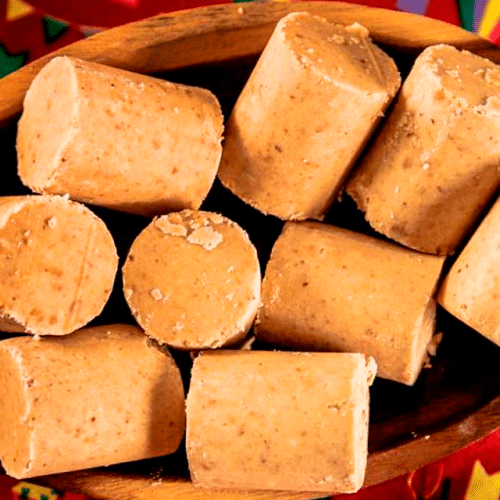

Paçoca (Brazilian Peanut Candy)

Extremely addictive, this 3-ingredient Paçoca is one of Brazil's most beloved treats!
Paçoca is a candy made out of ground peanuts, sugar and salt.
Very popular at the Festas Juninas, these candies are truly a peanut lovers dream!
Ingredients
- 2 cups roasted unsalted peanuts
- 1 cup sugar
- Pinch of salt
Steps
- Combine all the ingredients in the food processor
- Pulse-stopping every now and then to open and stir until the mixture is fine and resembles wet sand (be careful not to overdo it, or you'll end up with peanut butter)
- Fill a small round (or the shape of your choice) cookie cutter, firmly pressing down with your fingers until it is level and compact
- Carefully unmold, using your fingers to help each paçoca push through the cookie cutter
- Repeat with the remaining mixture to make around 15 peanut candies total
- Enjoy! You can store them in an airtight container at room temperature
Return to main page